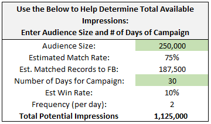
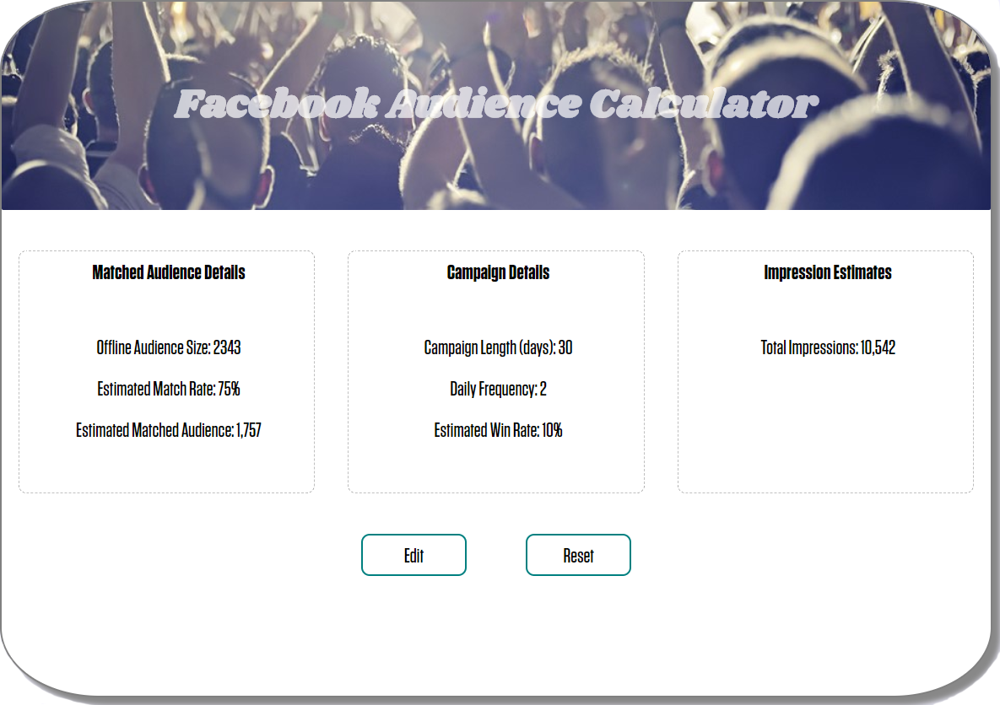

Created:
1 The What:
A tool for advertisers to estimate how many people they can expect to onboard to Facebook and how many impressions they could potentially deliver.
2 The How:
The Facebook Audience Calculator was a side project which was initially written in Python as a command line program. However, I wanted additional practice with JavaScript so I translated it and built a simple UI.
Above you see the origination of the calculator, a basic Excel-based solution. While it did the job, it was not very user-friendly and not all that dynamic. My goal was to set out to create something more visually pleasing and easier to follow.
3 The Result:
With one click, the app calculates how many impressions an advertiser could potentially serve to their audience in a 30 day campaign. The user can then click to see the full details of how the calculation was done, with the option to adjust variables such as campaign length, frequency capping and others. If any adjustments are made, the estimated impressions automatically recalculate based on the new parameters.
The app can be improved by adding additional features/functionality such as preventing the user from entering a match rate higher than 100%, adding an additional step for forecasting costs, and smoother transitions.
4 Challenges:
One of the toughest parts of this project for me was control flow on the full details page. It was important to provide the
user the controls to modify the data, make sure it was captured correctly, and to highlight error messages in the appropriate
areas when needed. To tackle this, I tried to break down the process into smaller pieces. First, dynamically populating the
elements in each section, then handling the Edit/Save button features, and then the Reset button.
This was also my first time using CSS Grid, which is a great tool, but delayed development as I was learning on the fly.
While there are things I would have done differently in retrospect, I am happy with the path of this project as it helped me push
forward and apply new skills.